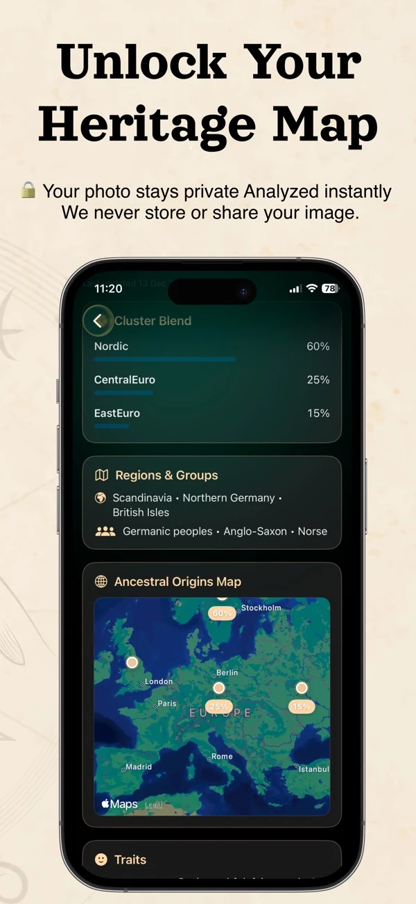

What to do with an unfamiliar ethnicity label
Start by separating three things: your own cultural identity, your documented family history, and the label an app generates from an image. A surprising visual label does not override the first two. A percentage on a photo report should not be read as the share of DNA inherited from a population.

- Read the label: broad clusters and specific country names are different categories.
- Read the number carefully: a displayed score is not a validated probability of ethnicity or a genetic percentage.
- Keep family evidence separate: records, known relationships and cultural history answer questions the photograph cannot.
Official publisher screenshot from the App Store listing, checked October 13, 2026. This is a UI example, not a benchmark or verified ancestry report. Product wording shown inside the image does not independently verify privacy or accuracy.
For a practical comparison, write down the report's exact wording, the photo conditions and what you already know from family records. Keep any new family-history question as a hypothesis until records support it. You can explore the app's photo-result workflow, compare nationality and visual resemblance, or read why consistent AI results do not prove ancestry.
Have you ever looked in the mirror and wondered: "What ethnicity do I look like?"
Maybe people often guess that you are Greek, Italian, Turkish, Irish, Armenian, Mexican, Polish, Indian, Chinese, or something completely different. Maybe strangers ask, "Where are you from?" even when your answer is simple. Or maybe your family history feels more mixed than what you were told growing up.
Today, AI tools make it possible to explore these questions in a fun and visual way. An AI face ethnicity test can look at facial features, proportions, and visual patterns to suggest which ethnic or regional backgrounds your appearance may resemble.
It is not the same as a DNA test. It cannot prove your ancestry. But it can be a fascinating way to explore how your face may be perceived and which heritage patterns people might associate with your look.
That is exactly what Ancestor Lens was created for: a fun AI-powered experience that helps you discover possible ancestry vibes from your face.
What Does "What Ethnicity Do I Look Like?" Really Mean?
When people search for "what ethnicity do I look like", they are usually asking one of several things:
- What ethnic background do my facial features resemble?
- Do I look more Southern European, Eastern European, Middle Eastern, Asian, Latin American, Celtic, Balkan, or mixed?
- Why do people always guess a certain ethnicity for me?
- Could my face show signs of mixed ancestry?
- What would AI guess about my heritage based on my photo?
Ethnicity is connected to culture, ancestry, history, language, family background, and identity. A face alone cannot define who someone is. However, facial appearance can sometimes reflect broad regional patterns that people associate with different populations.
Related: Can AI Guess Your Ethnicity From a Photo? →Can AI Tell What Ethnicity You Look Like?
AI can analyze visual patterns in a face and compare them with appearance traits often associated with different regions or population groups.
An AI face ethnicity test may look at things like:
- Face shape and proportions
- Eye shape and spacing
- Nose structure
- Cheekbones and jawline
- Skin tone and hair color
- Visual similarity to regional appearance patterns
Based on these patterns, the AI may suggest ethnicities or regions that your face visually resembles. However, it is important to understand this clearly: AI cannot confirm your real ethnicity from your face. Only family history, genealogy research, cultural background, or a DNA test can give stronger information about ancestry.
Why Do People Ask "What Ethnicity Do I Look Like?"
This question is popular because identity is personal, emotional, and often surprising. Many people grow up hearing one family story, but their appearance makes others guess something different. For example:
- "Everyone thinks I'm Italian, but my family is Irish."
- "People always ask if I'm Turkish, but I'm Greek."
- "I thought I looked fully Polish, but people guess Spanish."
- "My family says we are Mexican, but people think I have Middle Eastern features."
- "I never knew I looked mixed until strangers kept guessing different countries."
This curiosity is why ethnicity face tests became popular on TikTok, Instagram, and search engines. People love comparing AI guesses with what their family says, what strangers assume, or what their DNA results show.
Related: Why AI Ancestry Results Are Going Viral on TikTok →What Makes Someone Look Like a Certain Ethnicity?
People often associate certain features with certain regions, but these associations are broad and imperfect.
Mediterranean Look
People may associate this with Greek, Italian, Spanish, Portuguese, Turkish, Balkan, or Middle Eastern features. Common visual associations may include darker hair, expressive eyes, olive skin tone, strong brows, or defined facial structure.
Celtic or Northern European Look
People may associate this with Irish, Scottish, English, Scandinavian, German, or Dutch ancestry. Common visual associations may include lighter skin, blue or green eyes, freckles, lighter hair, or softer facial contrast.
Eastern European Look
People may associate this with Polish, Ukrainian, Russian, Czech, Slovak, Balkan, or Baltic ancestry. Common visual associations may include high cheekbones, lighter eyes, strong bone structure, and a mix of Slavic or Central European features.
Middle Eastern or Caucasus Look
People may associate this with Armenian, Georgian, Turkish, Persian, Lebanese, Syrian, or other West Asian backgrounds. Common visual associations may include strong brows, deep-set eyes, dark hair, prominent nose shape, and defined facial structure.
East Asian Look
People may associate this with Chinese, Korean, Japanese, Vietnamese, Thai, Filipino, or mixed Asian backgrounds. Common visual associations may include specific eye shapes, facial proportions, hair texture, and softer or sharper facial balance depending on region.
These are only broad appearance patterns. Real people are much more diverse than categories.
Is "Ethnicity by Face" the Same as DNA?
No. A DNA test analyzes genetic markers. A face ethnicity test analyzes visual appearance. (To understand what genetic reports can actually determine, read our guide on can a DNA test tell what country you're from.) Both can be fun, but they answer different questions:
| Question | Best Tool |
|---|---|
| What ancestry did I inherit genetically? | DNA test |
| What ethnicity do I visually resemble? | AI face test |
| Why do people guess I am from a certain country? | AI appearance analysis |
| What heritage vibes does my face give? | Ancestor Lens |
Best Photo Tips for Better AI Results
To get a better result from an AI face ethnicity test, use a clear photo:
- Front-facing selfie with natural light
- No sunglasses or heavy filters
- No extreme makeup
- Face clearly visible, neutral expression
- No strong shadows
- Only one person in the photo
Avoid blurry photos, side profiles, group pictures, or photos with heavy beauty filters. These can make AI analysis less consistent.
Discover Your Face Heritage with Ancestor Lens
Ever wondered what ethnicity or nationality you look like? Upload your selfie and explore an AI visual heritage result.
Frequently Asked Questions
Explore More About Your Ancestry
Want to go deeper into your origins? Explore more guides:
- 👉 Can a DNA Test Tell What Country You're From? Explained
- 👉 What Nationality Do I Look Like? AI Face Nationality Guess
- 👉 AI Face Ethnicity Test: Discover Your Face Heritage
- 👉 Can AI Guess Your Ethnicity From a Photo?
- 👉 What Does Your Face Say About Your Ancestry?
- 👉 AI Ancestry Test vs DNA Test: What's the Difference?
- 👉 Why AI Ancestry Results Are Going Viral on TikTok
Ready to Discover Your Own Story?
You're not here for data — you're here for a story about yourself.